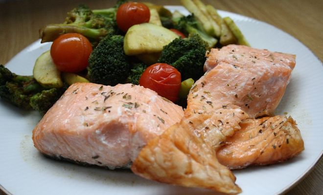

Losos na spôsob Teriyaki

Opis
Losos patrí medzi najobľúbenejšie a najčastejšie konzumované ryby na Slovensku. A nie je sa vôbec čomu diviť. Mäso z lososa je lahodné a navyše výživovo veľmi hodnotné. Filety neobsahujú takmer žiadne kosti, čo ešte zvyšuje popularitu medzi stravníkmi, ktorí mnohokrát ryby práve kvôli kostiam odmietajú.
Ingrediencie
- 4ks čerstvý losos
- 170 ml sójová omáčka
- 1 PL med
- 2 PL biely vínny ocot
- 2 strúčikycesnak
- 1 ČLmletý zázvor
- 2 ks cuketa
- 7 ks cherry paradajky
- soľ
- mleté čierne korenie
- sójová omáčka
- citrónová šťava
- olivový olej
- Pripravíme si suroviny.
- Zeleninu si "napacujeme". Zeleninu zmiešame so soľou, korením, a sójovou omáčkou.
- Pripravíme si marinádu. Do menšieho hrnca nalejeme sójovú omáčku, med, vínny ocot, roztlačený cesnak, zázvor a olivový olej. Marinádu varíme asi 5 minút, aby sa prepojili chute. Prelejeme ju do misy a necháme vychladnúť. Potom do nej vložíme lososa a necháme v chladničke aspoň 30 minút.
- Lososa vyberieme z marinády, osušíme a opekáme na olivovom oleji 3 minúty z každej strany. Na záver pokvapkáme citrónovou šťavou.
- Zvyšnú marinádu prelejeme cez sitko do kastróla, zredukujeme na omáčku, ktorou prelejeme lososa na tanieri a podávame s pripravenou zeleninou. Dobrú chuť!
Vrátiť sa na hlavnú stránku
testovanie farby